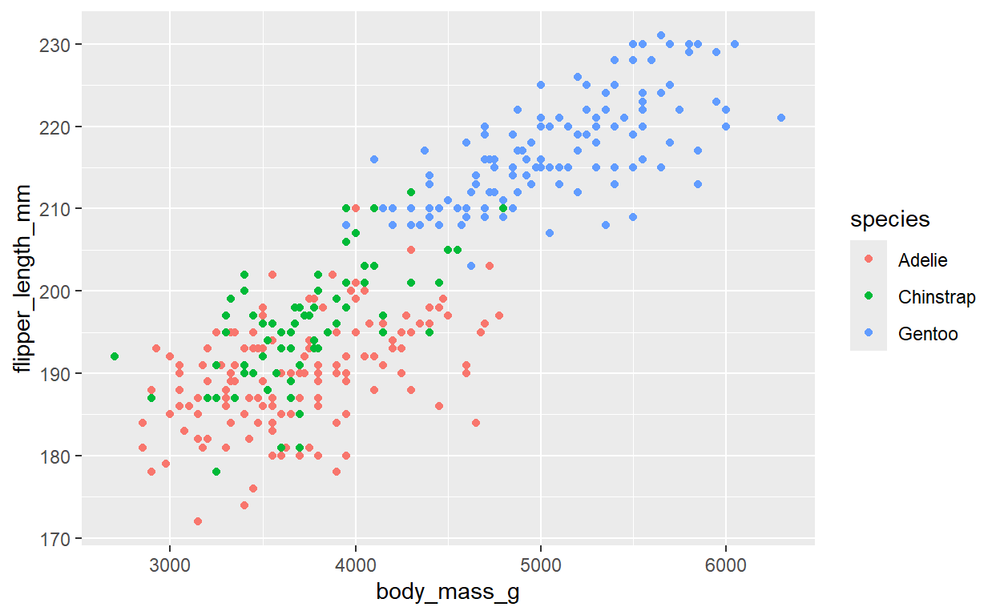

Intro and Setup
First as usual we need to load a few packages and, now, datasets. Make sure to run this in your own script as you follow along!
pacman::p_load(tidyverse, palmerpenguins)
data(mpg)
data(diamonds)
data(penguins)In addition to penguins we’re going to use a couple new
datasets from the tidyverse package for this tutorial:
mpg (which stands for “miles per gallon” - this is about
cars) and diamonds. Explore these datasets a bit first
using the techniques you’ve already learned.
#Explore mpg - write your own code below
#Explore diamonds - write your own code belowAesthetics (Continued)
We’ll start off with a more detailed dive into aesthetics. You’ve already learned a few - do you remember what they are? Briefly review that portion of Tutorial 1.1 if not.
Aesthetics are often most powerful when used to add information to a graph, rather than just changing colors and shapes. We’ve already seen an example of that with grouping, splitting, and coloring our histogram of flipper length by species. To explore this further, though, let’s start taking a look at graphs that display two variables.
I don’t know about you all, but I’m kind of curious about the relationship between body mass and flipper size in penguins. Do bigger penguins have longer flippers? Let’s start with a simple scatterplot:
#A simple scatterplot
ggplot(data = penguins) +
geom_point(mapping = aes(x = body_mass_g, y = flipper_length_mm))What’s the problem with this graph? Think back to our histogram.
Remember that Gentoo penguins are bigger than Adelies. Maybe we’re curious whether they also have longer flippers. How can we look at that?
Grouping Aesthetics
Overview and Color
Just like with our histogram, let’s color our
scatterplot by species. Can you figure out how to modify the code below
to do that? Don’t look below this code box until you
do.
#Scatterplot colored by species - need to modify code
ggplot(data = penguins) +
geom_point(mapping = aes(x = body_mass_g, y = flipper_length_mm))Review the plot for a minute. How do the species compare on body mass and flipper length?
In this code color is an example of a grouping
aesthetic - it tells ggplot() to group the data by
species and do something different (in this case, use a different color)
for each one. These always appear inside mapping = aes().
To be more explicit we could use this code which accomplishes the same
thing but specifies the group aesthetic:
#Scatterplot colored by species
ggplot(data = penguins) +
geom_point(mapping = aes(x = body_mass_g, y = flipper_length_mm, color = species,
group = species))## Warning: Removed 2 rows containing missing values (geom_point).
R just figured out you wanted it to group by species once you asked
for it to color by species, so you didn’t have to tell it specifically.
We’ll see some examples below where the group aesthetic
itself is actually useful, though.
Remember we use color = above rather than fill because
we’re coloring points, and we put it within mapping = aes()
because we’re mapping it to a variable in the data.
Point Shapes and Sizes
One problem with just using colors to differentiate groups of interest is colorblindness. 1 in 8 males and 1 in 200 females suffer from colorblindness, a common form of which involves the inability to distinguish between red and green hues. So would they be able to tell the difference between Adelie and Chinstrap penguins above?
How can you make your graphs more accessible to these people? How
about using shapes instead of or in addition to colors?
Simply add the shape = aesthetic to the code below:
#Scatterplot colored and shaped by species - need to modify code
ggplot(data = penguins) +
geom_point(mapping = aes(x = body_mass_g, y = flipper_length_mm, color = species))Now even if you’re colorblind you can differentiate the species!
You can also change the size of points instead.
Simply use the size = aesthetic.
#Scatterplot colored and sized by species
ggplot(data = penguins) +
geom_point(mapping = aes(x = body_mass_g, y = flipper_length_mm, color = species,
size = species))Notice the warning this threw us, though. R doesn’t like the fact
that you mapped size to a discrete
(i.e. categorical) rather than a continuous variable.
Shape is a categorical aesthetic (you’re a circle, a
square, a triangle, etc.), so it makes sense to map to a categorical
variable like species. Size, though, is a
continuous number - R would rather you map that to a continuous
variable. Like, say, bill_length_mm. Can you figure out how
to do all that below?
#Scatterplot colored and shaped by species, and sized by bill lengthNow our graph not only shows the body mass and flipper length of penguins by species. Not only is it good for colorblind folks. Now it also shows that Adelie penguins tend to have shorter bills, too!
In my opinion this graph is far too complex and crowded with information. I don’t usually like to use size as a group aesthetic because I find it tends to clutter the graph and confuse readers. But size is useful for other things, and now you know how to use it!
Transparency (Alpha)
You can also change the transparency of points (or bigger shapes) using an aesthetic called alpha. Why “alpha?” It’s complicated, but if you’re really curious check this out.
#Scatterplot colored and alpha-ed by species
ggplot(data = penguins) +
geom_point(mapping = aes(x = body_mass_g, y = flipper_length_mm, color = species,
alpha = species))Using alpha as a group aesthetic has the same problem as size, but we’ve already seen an example where it’s useful outside the grouping context. Do you remember?
Remember when we split our histogram by species? We needed to make the histogram bars partly transparent so you could see when the species overlapped in size.
Manually Changing Colors and Shapes
Color and shape aesthetics are great for grouping, but they can also be changed manually.
Let’s reproduce our basic scatterplot, but with all green squares
instead of the default black circles. Would these go inside or outside
the mapping = aes() argument?
#Scatterplot of green squares
ggplot(data = penguins) +
geom_point(mapping = aes(x = body_mass_g, y = flipper_length_mm),
color = "darkgreen", shape = 15)How does R know shape = 15 means a square? R has 25
built-in shapes for points:
R shape codes.
Shapes 0-14 are hollow outlines. Their outline color is controlled with the
coloraesthetic. You cannot give them an interior fill color.Shapes 15-18 are shapes whose color is controlled with the
coloraesthetic. 16 is the default value if you don’t specify a different shape - a black circle whose color you change withcolor. You can think of these shapes as having no outlines, just a color.Shapes 19-24 are shapes whose outline is controlled with the
coloraesthetic and whose interior color is controlled withfill.
Challenge:Try some different shapes and colors in the scatterplot above until you find a combination you like!
Manually Changing Sizes and Transparency
Size and transparency (alpha) aesthetics are most useful when being
changed manually. Say you want to make the points on a scatterplot all
bigger or smaller. Try changing the size = aesthetic below
and seeing how the plot changes.
#Scatterplot colored and alpha-ed by species - play around with the size aesthetic!
ggplot(data = penguins) +
geom_point(mapping = aes(x = body_mass_g, y = flipper_length_mm), size = 1.5)The alpha = aesthetic is most useful when you have
overlapping data. This can be points on a scatterplot or, as we saw
before, histograms. Note alpha is like a percentage, so it has to be
between 0 (0%, fully transparent) and 1 (100%, fully opaque). Play
around with with transparency parameters for both kinds of figures
below:
#Scatterplot colored and alpha-ed by species - play around with alpha values!
ggplot(data = penguins) +
geom_point(mapping = aes(x = body_mass_g, y = flipper_length_mm), alpha = 0.25)
#Histogram of flipper length, with different fills for each species, improved
ggplot(data = penguins) +
geom_histogram(mapping = aes(x = flipper_length_mm, fill = species),
position = "identity",
alpha = 0.5) #Play around with alpha values!Notice how in the scatterplot some points look darker than others when you reduce alpha? That shows points with the same values that were previously obscured because they were stacked on top of one another. Increasing the transparency (decreasing alpha) is one way to reveal overlapping data.
Line Type and Thickness
There are two more common aesthetics we should talk about, but they relate to lines, which we haven’t used yet. Let’s take our scatterplot from above and fit a straight line through the data points - like running a linear regression. Notice we used some global aesthetics here to avoid having to type them separately in each geom layer.
#A simple scatterplot with a line
ggplot(data = penguins, mapping = aes(x = body_mass_g, y = flipper_length_mm)) +
geom_point() +
geom_smooth(method = "lm")We can change the color (color =), thickness
(lwd =), and type (linetype =) of that line.
For example:
#A simple scatterplot with a thicker dashed red line
ggplot(data = penguins, mapping = aes(x = body_mass_g, y = flipper_length_mm)) +
geom_point() +
geom_smooth(method = "lm",
linetype = "dashed", color = "red", lwd = 3)Hopefully color = and lwd = (line width, or
thickness) are pretty self-explanatory by now. linetype =
is slightly more complicated because how do you know what values it can
take on? Try typing ?linetype to see possible values. You
can define it either using the value in quotes, such as
"dashed", or the corresponding integer (for a dashed line,
just type linetype = 2).
Challenge: Try changing the color, thickness, and type
of the line above to something you like. Try numbers and words for the
linetype aesthetic.
Notice the line also has a confidence interval (CI) around it - it’s a 95% confidence interval by default. You can remove it (not recommended), change its width (to, say an 89% confidence interval), or change its color or transparency:
#A simple scatterplot with a thicker dashed red line and modified CI
ggplot(data = penguins, mapping = aes(x = body_mass_g, y = flipper_length_mm)) +
geom_point() +
geom_smooth(method = "lm",
linetype = "dashed", color = "red", lwd = 3,
se = TRUE, # Set to FALSE to remove the CI
alpha = 0.6, fill = "blue", level = 0.95) # Change CI transparency, color, width (default 95%)Challenge: Play around with all the aesthetics above to get a better feel for what they do!
Facetting
This is element #7 in our Grammar of Graphics framework. We’ve already covered #1 (data), #2 (geoms), and #3 (aesthetics). Now we’re skipping ahead slightly to cover something simpler before #s 4-6.
Facets are an easy way to break a single plot into
sub-plots by groups, usually defined by a categorical variable. Consider
the below plot of displ (a measure of a car’s engine size)
vs. hwy (miles per gallon on the highway, a measure of fuel
efficiency) from the mpg dataset. We’ve split the graph by
car type (class):
#Scatterplot of engine size vs. highway mileage, by car class
ggplot(data = mpg, mapping = aes(x = displ, y = hwy, color = class)) +
geom_point() +
geom_smooth() # Instead of specifying we want only a straight line we allow ggplot to use its default approach, called LOESS, that fits more flexible relationships. Note R lets you know this is what it's doing when you run this code.That’s kind of a mess, isn’t it? What if we split this into multiple plots? That seems like it should be a pain to do, though, right?
Well, no! Not in the tidyverse anyway. It takes one line
of code in ggplot().
#Scatterplot of engine size vs. highway mileage, by car class
ggplot(data = mpg, mapping = aes(x = displ, y = hwy, color = class)) +
geom_point() +
geom_smooth() +
facet_wrap(~ class, nrow = 2) # The syntax looks a little funny but it just means facet by class, and arrange the resulting facets in 2 rowsThe benefit here is now that each plot is separate there’s less clutter and overlap. The drawback is that it’s harder to compare across facets. Do compacts have generally higher highway mileage than SUVs? On a single graph it’s easy to tell, here your eyes have to dart back and forth a bit to make a guess. Nonetheless, you’ll find facetting extremely useful, I promise.
You can also facet by two variables using facet_grid()
instead:
#Scatterplot of engine size vs. highway mileage, by car class
ggplot(data = mpg, mapping = aes(x = displ, y = hwy, color = class)) +
geom_point() +
facet_grid(drv ~ cyl) #drv = front, rear or 4-wheel drive; cyl = number of cylinders in engineThe facet_grid() row is your first experience with
formula notation in R. You’ll see it come up a few more
times later, but in this context it just tells R to create rows of plots
from drv and columns from cyl.
Notice that a few combinations of these variables are common, some are uncommon, and some don’t exist at all.
Facetting “Scales”
Notice that in both the above examples the X and Y axes had the same start and end point. This led some graphs to look like points are “smooshed” over into one side or even one corner. What if we wanted to change that?
#Scatterplot of engine size vs. highway mileage, by car class
ggplot(data = mpg, mapping = aes(x = displ, y = hwy, color = class)) +
geom_point() +
geom_smooth() +
facet_wrap(~ class, nrow = 2,
scales = "free") # The default is "fixed", meaning the scales are fixed (the same) across sub-plotsNow everything is plotted on a different scale. The benefit is its easier to see the relationships within each group and the data are less “smooshed.” The problem is that it’s harder to compare across sub-plots.
Look again - do compacts and SUVs have about the same average highway mileage, or is one higher than the other? You now have to compare the y axes and notice that the bottom for “compact” is nearly the same as the top for “suv”!
Challenge: You can allow just the x or y axes
to vary while keeping the other fixed by using
scales = free_x or scales = free_y. Try this
in the code above to see the effects!
Statistical Transformations (Stats)
This is element #4 in our Grammar of Graphics framework. We’ve already covered #1 (data), #2 (geoms), #3 (aesthetics), and #7 (facetting).
When I got engaged to my wife I had a jeweler re-set a diamond from
my grandmother’s engagement ring. Part of that process involved getting
that diamond appraised. How could I know I was getting a good deal? What
should a diamond of a certain size and quality be worth? We can explore
the diamonds dataset to get an idea!
Consider a basic scatterplot of two variables from the
diamonds dataset. Note carat is a measure of
the weight of a diamond; in case you’re curious, it’s equivalent to 200
mg.
rows <- sample(nrow(diamonds))
diamonds <- diamonds[rows, ]#A simple scatterplot of carat vs. price, using just the first 5000 rows to simplify plotting (54K rows total)
ggplot(data = head(diamonds, 5000)) +
geom_point(mapping = aes(x = carat, y = price))Here the values of carat and price map
directly onto their x and y coordinates with no changes. You
might say they are identical. In fact, behind the scenes that’s
exactly what ggplot() is telling R.
Just as each geom takes a set of
aesthetics, it also takes a stat
(statistical transformation) that tells it to do something to the data
before mapping to specific aesthetics. The default stat
for geom_point() is stat = "identity", which
in English means “do nothing” - map the data just as they are
(identically).
Challenge: Note that we didn’t need to specify the
argument stat = "identity" in the code above because it’s
the default stat for geom_point() and it’s what we wanted.
Try adding it to the above code, though, as a new
argument to geom_point() - you should get
the exact same results, you’ve just made it more explicit.
How can you know what the default stat is for a geom? Try typing
?geom_point into the Console to go to its help page, and
look under the Usage heading. You’ll see each argument
with their default values, one of which is
stat = "identity".
Let’s look at a more interesting example, though: a bar chart. My grandmother’s diamond had an “Ideal” cut. How does that compare to the diamonds in this dataset? How many of each type of cut are there?
#A simple bar chart
ggplot(data = diamonds) +
geom_bar(mapping = aes(x = cut))OK, looks like R plotted “Good” as about 5,000. Can you find that value anywhere in the dataset? How did R decide to map “Good” to 5,000? Perhaps it applied some kind of statistical transformation?
Can you figure out what the default stat is for
geom_bar()?
The “count” Stat
stat = "count" works with categorical variables. It’s an
algorithm (transformation) that tells
ggplot() to first count the number of observations
at each level of the x aesthetic (in our case, cut) and
plot that, rather than any actual value from the dataset.
Here’s an illustration taken from R for Data Science chapter
3.7:

How a bar chart and stat = ‘count’ work.
Changing a Default Stat
With some geoms like geom_point() you’ll rarely change
the default stat. Bar charts are a weird case, though.
For instance, what if you had data like this instead?
cut_counts <- diamonds %>%
group_by(cut) %>%
summarize(n_diamonds = n())And then you tried to make a bar chart like this:
#A simple bar chart of summary data
ggplot(data = cut_counts) +
geom_bar(mapping = aes(x = cut))What the heck? Why is it plotting every group as 1? Think about it for a moment before reading on.
It’s because ggplot() is trying to use
stat = "count" to count the number of observations for each
value of cut, and it only finds one for each! But you want
it to plot the actual value of n_diamonds. The
identical value, one might say.
Here’s how you would fix the code. Unfortunately you have to both change the stat and do one other thing.
#A simple bar chart of summary data
ggplot(data = cut_counts) +
geom_bar(mapping = aes(x = cut, y = n_diamonds), stat = "identity") # If you use stat = "identity", you also have to tell ggplot() what value to use for the height of the bar (y) Other Stats
Many other geoms use non-“identity” stats when plotting. For example:
Histograms and frequency polygons use
stat = "bin"to “bin” your data in different groups and then plot bin counts.Density plots use
stat = "density"to compute the density values it then plots (don’t worry about further details for now).Smoothers like
geom_smooth()usestat = "smooth"to first fit a smoothed curve to your data. It then plots the values (predictions) of the curves rather than your data itself.Boxplots use
stat = "boxplot"to compute a 5-number summary (min, 1st quartile, median, 3rd quartile, max) that it then plots.
Check the ggplot2 cheatsheet for a more complete list of available stats.
Position Adjustments (Positions)
This is element #5 in our Grammar of Graphics framework. We’ve already covered #1 (data), #2 (geoms), #3 (aesthetics), #4 (stats), and #7 (facetting).
Bar charts are once again the easiest way to demonstrate what we mean by a position adjustment (position).
My grandmother’s diamond had an “Ideal” cut and a color grade of “H”. Color grades technically run from D-Z, where just like your grades earlier letters are better. I wonder how her diamond - which, as a reminder, I’m using for my wife’s engagement ring - compares to this huge dataset of diamonds in cut and color. Am I giving her a particularly nice diamond? (NOTE: I honestly think diamonds are far too expensive and often morally questionable due to how they are mined. My wife did not even want a diamond, and in no way am I suggesting this is something you should do for your own partners. But since I already had my grandmother’s sitting around and she had expressed a desire for me to use it, I did.)
Let’s create a bar chart to investigate this:
#A simple bar chart of summary data
ggplot(data = diamonds) +
geom_bar(mapping = aes(x = cut, fill = color))Where does my grandmother’s - now my wife’s diamond - fit in? Is it a common cut? A common color? Near the best, the worst, or kind of in the middle on both these dimensions?
Notice how the default is for geom_bar(), when using the
fill aesthetic mapped to a second variable, to produce a
stacked bar chart. Why does it do that? Check the default of
the position = argument in geom_bar(). Do you
remember how to do that?
Changing the Default Position
So the default for a bar chart is position = "stack",
which unsurprisingly produces a stacked bar chart. What do the other
options do? Try each of them below.
#A simple bar chart of summary data
ggplot(data = diamonds) +
geom_bar(mapping = aes(x = cut, fill = color), position = "stack") #Try "identity", "fill", and "dodge""identity"isn’t very good for bar charts because now the bars overlap (notice the y-axis is much shorter than before, and the “G” color group - the largest one for most cuts - is top rather than “D”).Challenge:If you want to see more clearly that these are overlapping try making the bars somewhat transparent. Do you remember how to do that?
"fill"makes all the bars the same height - 1.0 - so you see the proportion of diamonds of each cut that are in each color grade. This can be useful or not depending on the question you want to answer about your data!Does there seem to be a lot of variation in the distribution of colors in diamonds of different cuts?
"dodge"creates side-by-side bars for each color within each cut. Again, this may be useful or not depending on how you want to visualize your data and what exactly you’re trying to compare.This is probably the most common position adjustment I make in R. It makes it easier to compare the number of diamonds of each color within and across groups groups. In a stacked chart it’s a little harder to eyeball whether one chunk of a bar is bigger than another.
Coordinate Systems
This is element #6 in our Grammar of Graphics framework. This is the last element we have to introduce! While it’s arguably the most complicated one we’ll barely scratch the surface, so it’ll seem simple.
Most of the time - and all the time in this class - you’ll plot on a
Cartesian (X-Y) coordinate system. ggplot() is capable of
laying down all sorts of other systems, though, such as polar
coordinates (remember high school math?) and maps for spatial data. Just
know that’s something ggplot() can do.
The main coordinate system technique I want to introduce to you now
is coord_flip(), which flips the X and Y axes. Say you
wanted a horizontal bar chart rather than a vertical one. In
ggplot() it’s easy - just add one line of code!
#A simple horizontal bar chart of summary data
ggplot(data = mpg) +
geom_bar(mapping = aes(x = class)) +
coord_flip()While it isn’t a problem here, this is often useful if you have a lot of classes and long labels that overlap on the bottom. Flipping the coordinates means the labels have a lot more room to stack vertically rather than having to fit on a single line.
Or maybe you just like the look of horizontal bars better! I’m not here to judge.
Summary
In this tutorial we covered how to add more information to charts using color, shape, and size aesthetics. We also learned a bit about a few ways to customize your charts to your liking.
Finally, we introduced all the rest of the elements of the grammar of graphics.
ggplot(data = <DATA>) + # 1. A dataset
<GEOM_FUNCTION>( #2. A "geometric object", or geom - basically a chart type!
mapping = aes(<MAPPINGS>), # 3. Aesthetic mappings - specifying X and Y variables, changing colors, sizes, and fonts, and so on
stat = <STAT>, # 4. A statistical transformation, or "stat" - often unnecessary because the default is fine
position = <POSITION> # 5. Positional adjustments - for example, do you want bar charts stacked or side-by-side?
) +
<COORDINATE_FUNCTION> + # 6. Coordinate system - most often Cartesian (2-dimensional X-Y axes, but can also do polar, or maps for spatial data!)
<FACET_FUNCTION> # 7. Facetting - split one plot into many sub-plots, for example one frame/sub-plot for each species of penguinYou’re now equipped to combine them to produce basically any chart under the sun.
In the next tutorial we’ll introduce some more examples of common charts you might use and discuss a few more customization techniques to make them prettier!